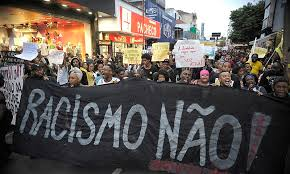
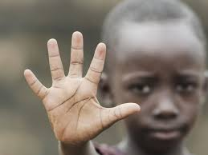

O que é Racismo?

Racismo é a discriminação e preconceito contra indivíduos com base na cor da pele ou características físicas, sob a falsa ideia de que a humanidade é dividida em raças distintas, com algumas sendo superiores a outras. Essa crença não tem fundamento científico, pois do ponto de vista biológico, não existem raças humanas distintas.
Origens do Racismo
O racismo tem raízes históricas profundas, muitas vezes ligadas à colonização e à escravidão. Durante a era colonial, as potências europeias justificaram a exploração e subjugação de povos africanos, asiáticos e indígenas com a ideia de que eram raças inferiores.
Racismo nos Séculos XIX e XX
No século XIX, teorias pseudocientíficas como o Darwinismo Social ganharam força, perpetuando a ideia de hierarquias raciais. No século XX, o racismo institucionalizou-se em muitas sociedades, culminando em atrocidades como o Apartheid na África do Sul e as leis de segregação racial nos Estados Unidos.
Racismo no Brasil
No Brasil, o racismo tem raízes na escravidão, que durou mais de 300 anos. Mesmo após a abolição em 1888, a discriminação racial persiste, manifestando-se em desigualdades sociais, econômicas e educacionais.
Movimentos de Resistência
Ao longo da história, muitos movimentos de resistência surgiram para combater o racismo. Nos Estados Unidos, figuras como Martin Luther King Jr. e Malcolm X lideraram movimentos pelos direitos civis. No Brasil, movimentos negros lutam por igualdade e justiça social.
Combate ao Racismo Hoje

O combate ao racismo é uma luta contínua. Hoje, diversas organizações e iniciativas trabalham para promover a igualdade racial, combater a discriminação e educar a sociedade sobre a importância da diversidade e inclusão.